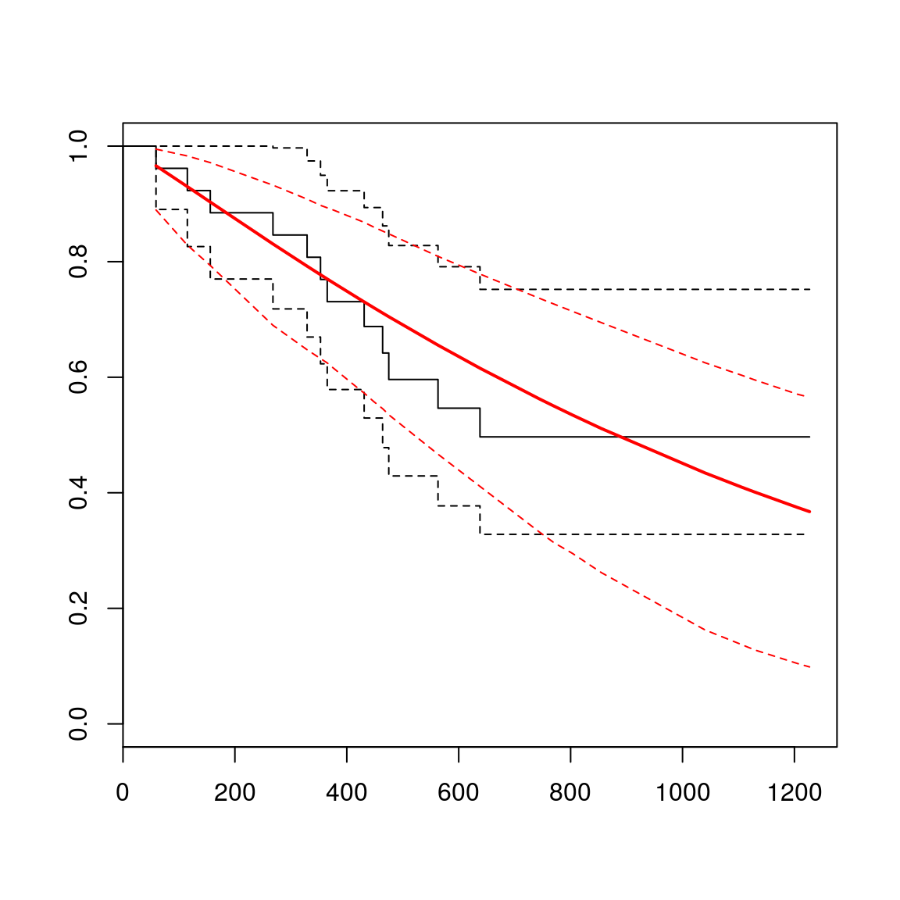
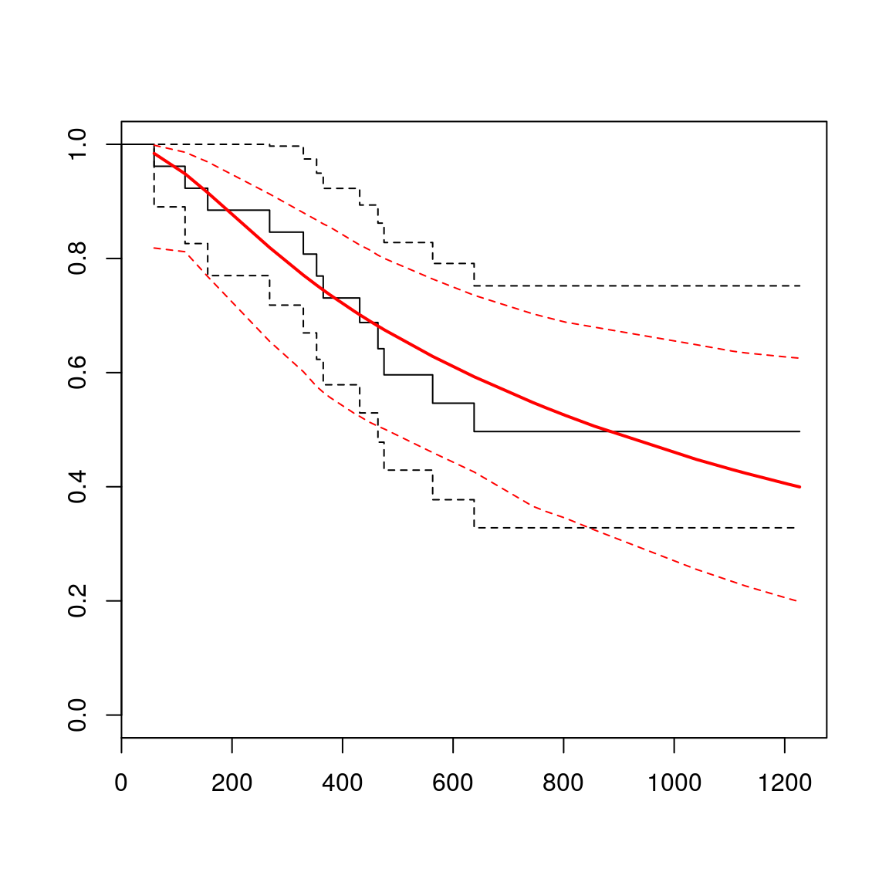
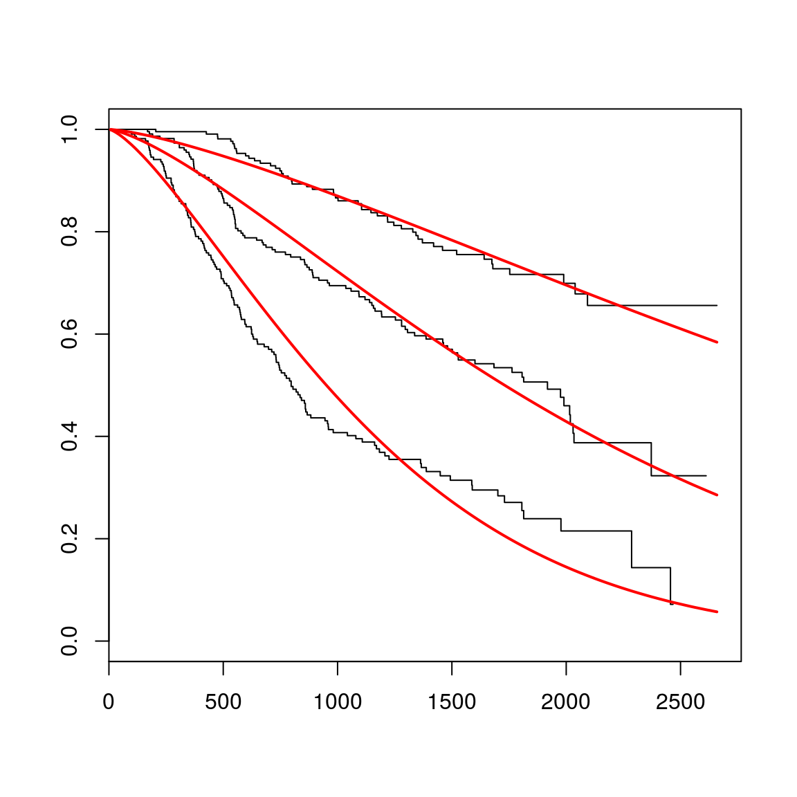
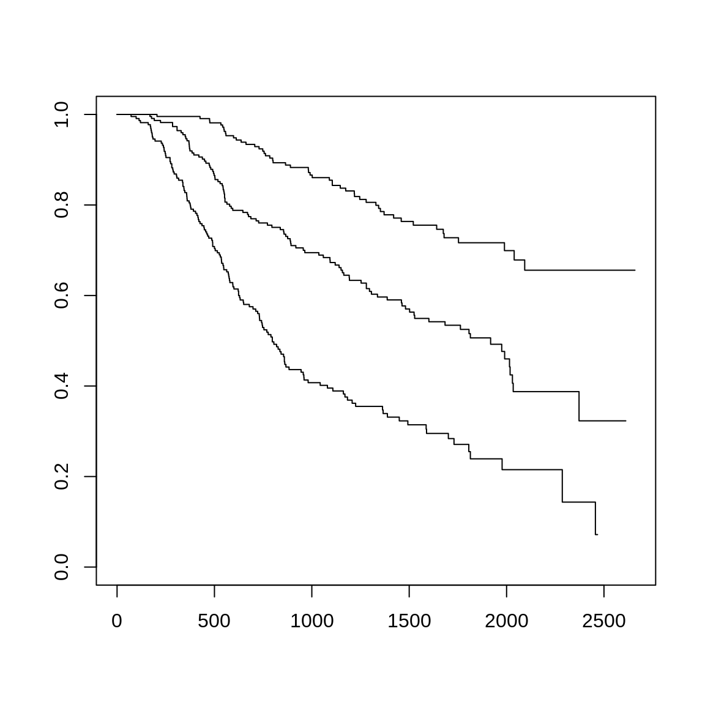
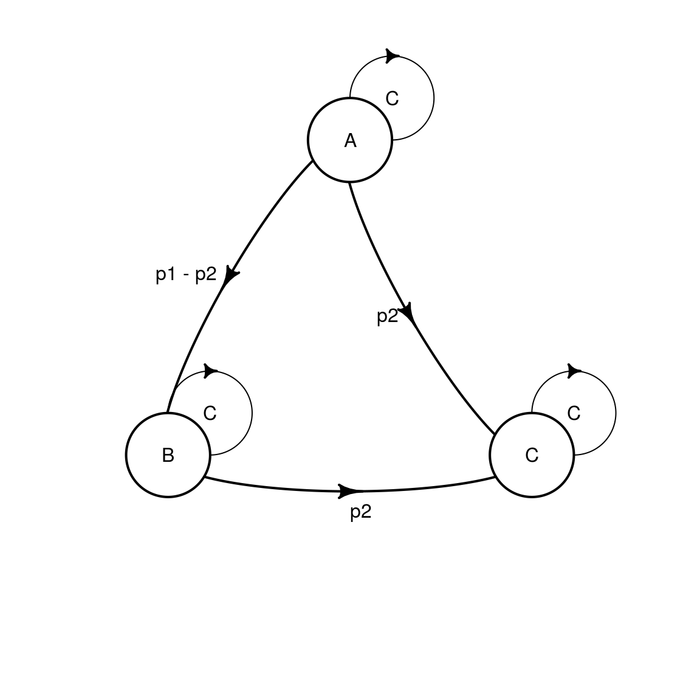
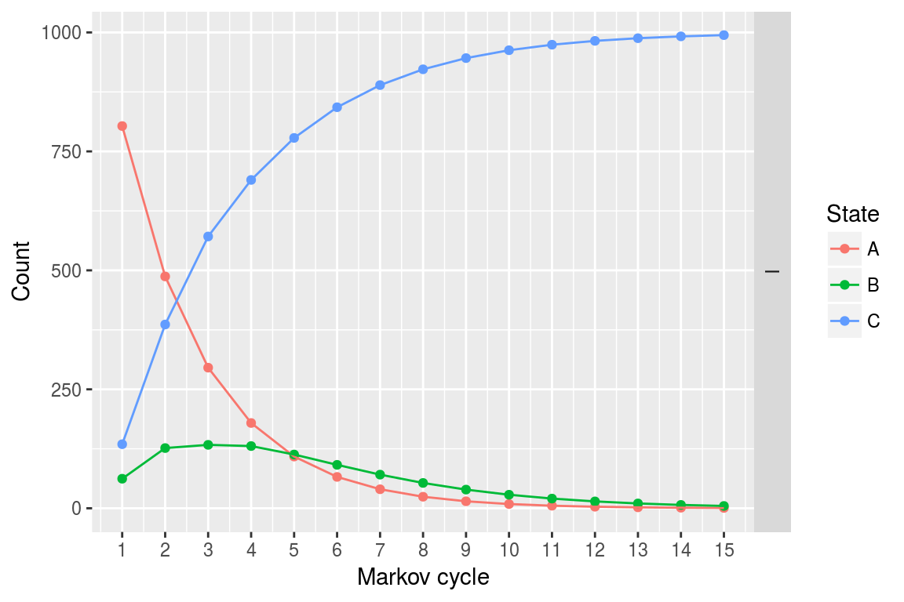
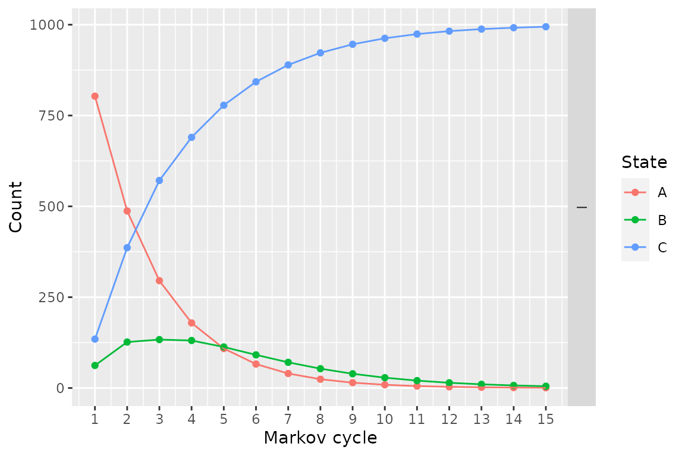

The heemod package provides a number of ways to estimate transition probabilities from survival distributions. Survival distributions can come from at least three different sources:
flexsurv::flexsurvreg().survival::survfit().Once defined, each of these types of distributions can be combined and modified using a standard set of operations.
User-defined parametric distributions are created using the define_survival() and define_spline_survival() functions:
surv_dist_1 <- define_survival(
distribution = "exp",
rate = .5
)
surv_dist_2 <- define_spline_survival(
scale = "odds",
gamma = c(-11.643, 1.843, 0.208),
knots = c(4.077537, 5.883183, 6.458338)
)## Loading required namespace: flexsurvFitted parametric models are created using flexsurv::flexsurvreg() and flexsurv::flexsurvspline():
library(flexsurv)## Loading required package: survivalfit_w <- flexsurvreg(
formula = Surv(futime, fustat) ~ 1,
data = ovarian, dist = "weibull"
)
plot(fit_w)
fit_spl <- flexsurvspline(
formula = Surv(futime, fustat) ~ 1,
data = ovarian,
scale = "odds",
k=1
)
plot(fit_spl)
Fitted models can include covariates. In order to use a model with covariates in heemod, you can use the set_covariates() function on the fitted model and provide as additional arguments the covariate values you want to model. You can also provide a data frame of covariate levels to aggregate survival probabilites over different groups. By default, heemod will aggregate over predicted survival probabilities for each subject in the dataset to which the model was fit.
fit_cov <- flexsurvreg(
formula = Surv(rectime, censrec) ~ group,
dist = "weibull",
data = bc
)
plot(fit_cov)
fitcov_good <- set_covariates(fit_cov, group = "Good")
fitcov_medium <- set_covariates(fit_cov, group = "Medium")
fitcov_poor <- set_covariates(fit_cov, group = "Poor")Similar functionality is also available for Kaplan-Meiers created using survival::survfit()
library(survival)
km_1 <- survfit(
formula = Surv(futime, fustat) ~ 1,
data = ovarian
)
km_cov <- survfit(
formula = Surv(rectime, censrec) ~ group,
data = bc
)
plot(km_cov)
km_good <- set_covariates(km_cov, group = "Good")
km_medium <- set_covariates(km_cov, group = "Medium")
km_poor <- set_covariates(km_cov, group = "Poor")Once defined, treatment effects of various types can be applied to any survival distribution:
apply_hr().apply_or().apply_af().In addition, distributions can be combined using a variety of operations:
join().mix().add_hazards().km_poor_join <- join(
km_poor,
fitcov_poor,
at = 365
)
models_all <- mix(
fitcov_good, fitcov_medium, fitcov_poor,
weights = c(0.25, 0.25, 0.5)
)
combined_risks <- add_hazards(
fit_w, fitcov_good
)The transition or survival probabilities are computed with compute_surv(). Time (usually model_time or state_time) needs to be passed to the function as a time argument.
compute_surv(surv_dist_2, time = 1:5)## [1] 8.780223e-06 2.271877e-05 3.500128e-05 4.649850e-05 5.747782e-05All these operations can be chained with the %>% piping operator.
fit_cov %>%
set_covariates(group = "Good") %>%
apply_hr(hr = 2) %>%
join(
fitcov_poor,
at = 3
) %>%
mix(
fitcov_medium,
weights = c(0.25, 0.75)
) %>%
add_hazards(
fit_w
) %>%
compute_surv(time = 1:5)## [1] 0.0004011356 0.0004736851 0.0005069766 0.0005490092 0.0005692261For the example we define a simple model with only 1 strategy.
param <- define_parameters(
p1 = compute_surv(
surv_dist_1,
time = model_time # can also be state_time
),
p2 = km_1 %>%
join(fit_w, at = 730) %>%
compute_surv(
time = model_time,
cycle_length = 365 # time is in days in km_medium, in years in model_time
)
)
tm <- define_transition(
C, p1 - p2, p2,
0, C, p2,
0, 0, C
)## No named state -> generating names.plot(tm)## Loading required namespace: diagram
sA <- define_state(
cost = 10, ut = 1
)
sB <- define_state(
cost = 20, ut = .5
)
sC <- define_state(
cost = 0, ut = 0
)
stratTM <- define_strategy(
transition = tm,
A = sA, B = sB, C = sC
)
resTM <- run_model(
parameters = param,
stratTM,
cycles = 15,
cost = cost, effect = ut
)## No named model -> generating names.plot(resTM)
A partitioned survival model can also be computed:
ps <- define_part_surv(
pfs = surv_dist_1,
os = km_1 %>%
join(fit_w, at = 730),
cycle_length = c(1, 365) # 1 for pfs, 365 for os
)## No named state -> generating names.stratPS <- define_strategy(
transition = ps,
A = sA, B = sB, C = sC
)
resPS <- run_model(
stratPS,
cycles = 15,
cost = cost, effect = ut
)## No named model -> generating names.plot(resPS)